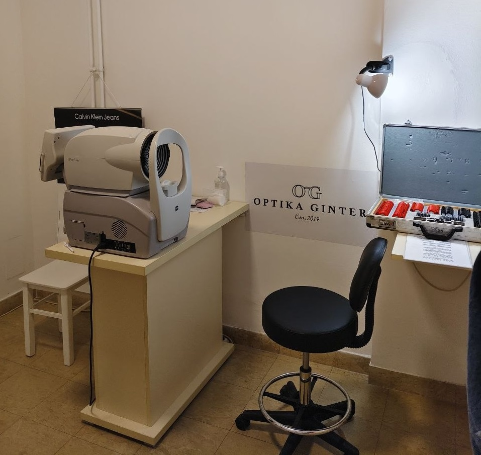
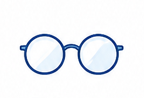
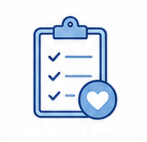

Приём

Как проходит приём, и почему он длится час
Некоторые пациенты удивляются: зачем целый час на подбор очков? Расскажу подробно — считаю важным, чтобы вы знали, что вас ждёт.

Пробный набор линз и пробная оправа — с их помощью подбирается коррекция
При записи я прошу заполнить анкету — с вопросами о целях визита, последнем посещении офтальмолога, наличии заболеваний и состояний, которые могут влиять на зрение. Жду честных и развёрнутых ответов: от этого во многом зависит качество консультации.
Когда получаю анкету — изучаю её, и если есть вопросы, могу уточнить их до приёма.
После получения анкеты я отправляю подтверждение: дату, время, адрес, стоимость приёма и инструкции по подготовке.

Анамнез и объяснение
Четыре этапа консультации:
Анамнез и объяснение
Подробно расспрашиваю о перенесённых заболеваниях, травмах, жалобах — и об истории зрения: с какого возраста упало, как носили очки, когда меняли.
Потом почти всегда рисую — глаз и ход лучей (да-да, физика 8 класса). На схеме объясняю, почему сейчас видно так, и что изменится после коррекции.

Обследование
- Объективная рефракция — авторефкератометр считывает показатели глаза, пока вы смотрите на воздушный шар внутри прибора.
- Субъективная рефракция — с помощью пробного набора линз и пробной оправы проверяется острота зрения.

Кабинет — авторефкератометр и рабочее место оптометриста

Подбор очков
Учитываю запрос и особенности зрительной работы: расстояние до монитора, до швейной машинки, до холста. Процессу подбора уделяю столько времени, сколько нужно — это нормально.

Рекомендации и сопровождение
По итогам обследования распечатываю карточку с результатами и рекомендациями. Даю схему адаптации к новым очкам, а в сложных случаях — стратегию постепенной смены коррекции.
Если остаётся время — провожаю в оптику. Помогаю выбрать оправу, подбираю линзы под бюджет и задачи, проверяю посадку, делаю разметку.
После получения очков я остаюсь на связи — можно писать и спрашивать, отвечу в свободное время.